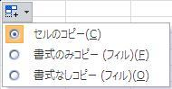
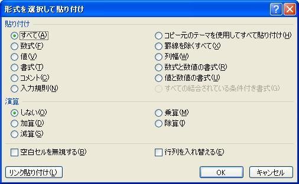

覚えておきたいエクセルの操作：数式のコピー
今回は、
数式のコピーです。
エクセルでセルをコピーする場合、
・セルの値のみコピー
・セルの数式のみコピー
セルの全てをコピーは、普通のコピーですね、
オートフィル後に

このような、貼り付けオプションが表示されます。
（エクセルのオプションでこの機能は止める事が出来ます）
ここで、「書式なしコピー」を選択すれば、数式のみコピーされます。
Ctrl+Vの後に、
このような、貼り付けオプションが表示されます。
（Enterで貼り付けた場合は表示されません）
２番目の「Fx」のアイコンで、数式のみコピーされます。
エクセル2007以前では、貼り付けオプション画面が少し違いますが、
２番目の「貼り付け先の書式に合わせる」で数式のみコピーされます。
やはり、古来からの定番としては、「形式を選択して貼り付け」です。
コピー後に、コピー先のセルで右クリックメニューから
形式を選択して貼り付け

「数式」を選択して「OK」、これで数式のみコピーとなります。
この画面の内容は、良く見て置く事をお勧め致します。
複数セルに数式を一括で入力する方法です。
上図で金額に単価*数量の計算式を入れる場合、
D3セル～D13セルを選択し、計算式を入力
ここで、Ctrl+Enterで数式が一括で入力できます。
もちろん、相対参照・絶対参照も有効です、セルコピーした場合と同様です。
この機能を応用すれば、既に入力済の数式を他のセルにコピーできます。
上図の場合、D3セルだけに数式を入れた場合、
D3セル～D13セルを選択し、F2でセル編集にします。
この時点で、上図と同じ状態になりますので、Ctrl+Enterで良い事になります。
この応用は、飛び飛びのセルでも可能です。
飛び飛びのセル範囲の場合はCtrlを押しながら選択します。
・コピー先のセル選択が終了したら、
最期にコピー元のセルをCtrlを押しながら選択します。
・F2で編集状態にします
・Ctrl+Enter
まとめると、
最期にコピー元のセルを選択して、F2→Ctrl+Enter
との方法が良いということではありません。
同じテーマ「エクセル基本操作」の記事
可視セルのみコピーする（非表示の行・列を除く）
日付表示の桁位置を揃える
覚えておきたいエクセルの操作：Enter編
覚えておきたいエクセルの操作：入力・編集
覚えておきたいエクセルの操作：ジャンプ
覚えておきたいエクセルの操作：数式のコピー
覚えておきたいエクセルの操作：文字列数値を数値化
覚えておきたいエクセルの操作：図形（オートシェイプ）
ハイパーリンクを絶対パスで保存する方法
入力時に勝手に付くハイパーリンクを消す方法
重複削除しユニークデータ作成（フィルターオプションの設定）
新着記事NEW ・・・新着記事一覧を見る
VBA100本ノック 100本目：WEBから100本ノックのリストを取得｜VBA練習問題（3月3日）
VBA100本ノック 99本目：自動席替え（行列と前後左右が全て違うように）｜VBA練習問題（3月2日）
VBA100本ノック 98本目：席替えルールが守られているか確認｜VBA練習問題（3月1日）
VBA100本ノック 97本目：Accessデータを取得（グループ集計）｜VBA練習問題（2月27日）
VBA100本ノック 96本目：Accessデータを取得（マスタ結合&抽出）｜VBA練習問題（2月26日）
VBA100本ノック 95本目：図形のテキストを検索するフォーム作成｜VBA練習問題（2月24日）
VBA100本ノック 94本目：表範囲からHTMLのtableタグを作成｜VBA練習問題（2月23日）
VBA100本ノック 93本目：複数ブックを連結して再分割｜VBA練習問題（2月22日）
VBA100本ノック 92本目：セルの色を16進で返す関数｜VBA練習問題（2月20日）
VBA100本ノック 91本目：時間計算（残業時間の月間合計）｜VBA練習問題（2月19日）
アクセスランキング ・・・ ランキング一覧を見る
1.最終行の取得（End,Rows.Count）｜VBA入門
2.RangeとCellsの使い方｜VBA入門
3.変数宣言のDimとデータ型｜VBA入門
4.マクロって何？VBAって何？｜VBA入門
5.Range以外の指定方法（Cells,Rows,Columns）｜VBA入門
6.セルのコピー&値の貼り付け（PasteSpecial）｜VBA入門
7.繰り返し処理（For Next)｜VBA入門
8.セルに文字を入れるとは（Range,Value）｜VBA入門
9.マクロはどこに書くの（VBEの起動）｜VBA入門
10.とにかく書いてみよう（Sub,End Sub）｜VBA入門
このサイトがお役に立ちましたら「シェア」「Bookmark」をお願いいたします。
記述には細心の注意をしたつもりですが、
間違いやご指摘がありましたら、「お問い合わせ」からお知らせいただけると幸いです。
掲載のVBAコードは動作を保証するものではなく、あくまでVBA学習のサンプルとして掲載しています。
掲載のVBAコードは自己責任でご使用ください。万一データ破損等の損害が発生しても責任は負いません。